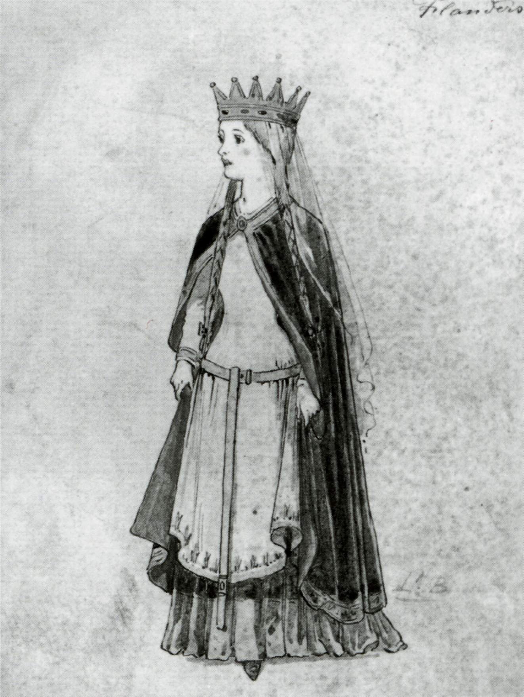

William the Conqueror was born in the 11th Century to an unmarried Duke of Normandy, the love child of his mistress. His illegitimate status didn’t stop him from rising to success in battle and leadership, eventually winning the status of King.
During his twenties, he sent a request to Matilda of Flanders for her hand in marriage. Matilda sent back a reply that she was far too high-borne to marry a bastard. When his messenger delivered news of the lady’s response, William the Conqueror rode from Normandy to the neighboring Flanders on his horse, where he found Matilda. He then threw her on the ground by her long, signature braids, in full view of her servants and onlookers. Then he rode off pridefully without a word.
After that, Matilda refused to marry anyone but William the Conqueror. They wed, and she bore him 9 children, including two future Kings. And yes, she was kind of a babe:

Chicks dig jerks. Even hot, high-borne chicks.
In the Anglosphere, I have noticed a rise in this type of shit test that will henceforth be known as the “Matilda of Flanders Shit Test”. This shit test is actually just an unveiled insult. Girls in the Western world will freely say “You suck” or “You’re a douchebag” or “Are you gay?” There is no wit. It is all push, no pull. It takes the enjoyable dance and rhythm out of a girl’s resistance and makes it a battle. I consider it unartistic and grounds for hatefucking.
It will happen to you if you go out and approach, and a good Boy Scout always comes prepared. The standard game advice is to remain unaffected, agree and amplify. This is fine and works… the first time. But too much Matilda of Flanders can not be tolerated.
Any good economist will tell you that when you subsidize something you get more of it. Well, the only subsidy a girl knows is attention. Attention is her currency, to be collected all night and jammed into her handbag alongside her orbiter’s balls. A girl will only behave up to the standard that is required for her to continue getting male attention. This is why a skillful retort to a bitchy shit test may only be rewarded with further bitchy shit-testing.
The modern man is subject to a legal system, so it is not advised to throw every smart-mouthed wench to the ground. Today, a girl whose flirt of choice is an insult must be given a hard takeaway. Ignore her, backturn, ride off on your horse, it doesn’t matter as long as you stop paying attention to her.
If you’ve already built some attraction, firmly but not butthurtedly stating “Do not talk to me like that” or “Talk to me when you’re ready to behave”, followed by a skillful takeaway may even result in the rarest moment on this precious earth: a hot girl’s apology.
But if it is only attention she seeks, won’t she just get that male attention from another guy? Understand: not all male attention is equal. The thirsty serfs that surround her will be happy to take her shit with a smile and ask for more. The Queen of a thousand subjects will soon bore of them all, but she will always seek out the King who reigns over her.
She wants to be ignored.
She wants to be judged.
She wants to be deemed unworthy, if only for a second.
It is only after being discarded and ignored and replaced that she can chase the most enjoyable pleasure a woman can have: winning over a high value man.
Don’t give her an orgasm, give her a challenge. Ignore, disapprove, backturn, withdraw affection, flirt with her friends, walk away. If your attention does not need to be won over, it is worth nothing to her.
But unless you have the steel balls of a Norman conqueror, do not try this. It can not be faked. If she senses for a moment that it is a tactic, that you want her to chase you, all is lost. Instead, make it real. Train yourself to be repulsed by a girl’s impolite behavior. It won’t be hard. You must desire to remove these abrasive girls from your life and demand a higher standard of behavior from the girls you speak with. Embrace your natural disgust towards the bitchy, the slutty, the manjawed.
Only when she shows signs that she is ready to submit and accept her womanly role as a soothing feminine presence can she be given a second chance. Be ready for this to happen, but never expect it. You must be fully prepared to ride off and take your regal dick elsewhere for another high-bred maiden to suck on, nary to think of this ill-mannered wench again.
Kings don’t chase, they replace. William the Conqueror was prepared to do just that. Are you?
Read More: The Four-Way Test